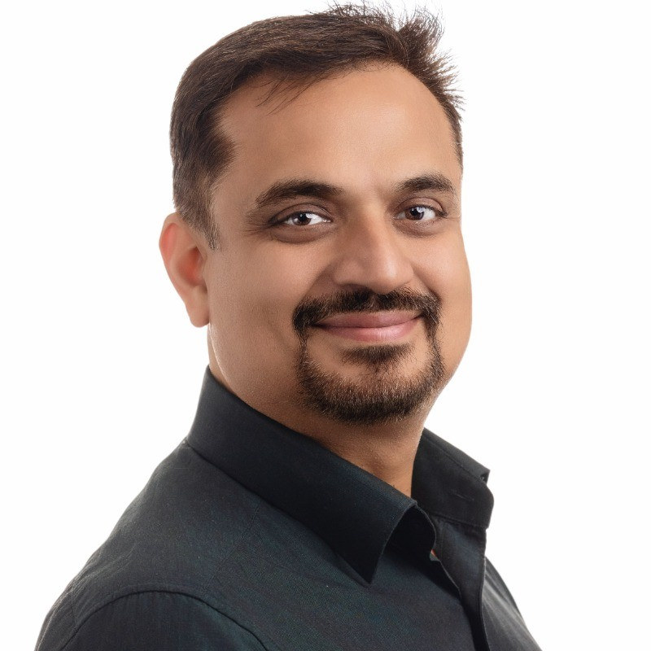
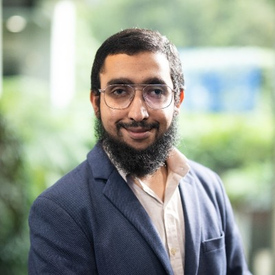
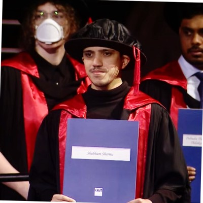

The people building NiFTi.
A core team of five, led from QUT's Intelligent Transport Systems group, with deep expertise in traffic flow theory, signal control, demand modelling, data analytics, and quantum-enhanced transport optimisation.

Prof. Ashish Bhaskar
Professor Ashish Bhaskar leads NiFTi from QUT's School of Civil and Environmental Engineering. His research focuses on transport big data analytics, modelling, simulation, and control, addressing challenges of road traffic congestion and its socioeconomic impacts. He holds a PhD in Intelligent Transport Systems from EPFL (Switzerland), a Masters from the University of Tokyo, and a BTech from IIT Kanpur. He has a proven track record of working with government and industry, including a longstanding partnership with the Queensland Department of Transport and Main Roads.
Four postdoctoral researchers working at the frontier of traffic control, demand estimation, signal optimisation, and quantum-enhanced transport systems.

Dr Abdhul Khadhir Seyed Hydroos
Specialises in traffic signal control, traffic flow theory, and intelligent transportation systems. Holds dual PhDs from QUT and IIT Madras. His doctoral research at QUT developed an optimal signal control strategy for heterogeneous less lane-disciplined traffic conditions. Leads advisory projects for government clients on network optimisation.

Dr Shubham Sharma
Completed his PhD at QUT (2024) on enhancing dynamic Origin-Destination matrix estimation for large networks through feature engineering. His research applies machine learning and tensor decomposition techniques to improve traffic demand predictions for proactive congestion management. Published in Transportation Research Part C.
Dr Tamojit Ghosh
Completed his PhD at QUT (2026) developing PASCAL (Pressure Adaptive Signal Control Algorithm), a novel max-pressure control method for urban traffic networks. His extensions include Coord-PASCAL for corridor green waves and Transit-PASCAL for smarter bus priority at intersections. Tested on real Brisbane corridors.
Dr Lachlan Oberg
Bridges quantum computing and transport engineering. Holds a PhD from the Australian National University in atom-scale fabrication of diamond quantum devices. At QUT, he leads work on quantum-enhanced transport optimisation, recently publishing a systematic review of quantum computing applications for transport research (2026).
NiFTi is actively recruiting researchers and welcoming industry-embedded partners. If you work on the problems we are solving, there is a place for you here.
Interested in joining the NiFTi team as a researcher, PhD candidate, or industry-embedded fellow?
Get in touch →